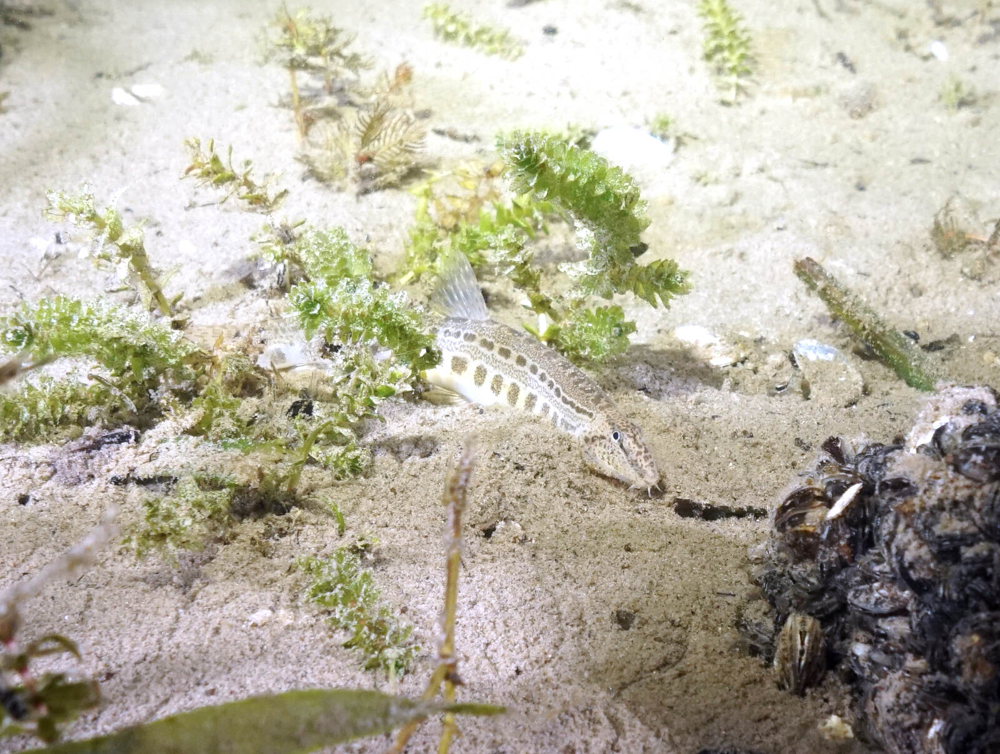

Rozpoznawanie
Najważniejsze cechy
Ma silnie wydłużone ciało, jasne tło z szeregiem ciemnych plamek oraz sześć krótkich wąsików wokół dolnego pyska. Pod okiem znajduje się ruchomy kolec obronny — nie należy dotykać tej okolicy ani próbować szybko odczepiać ryby. Od piskorza odróżnia ją smuklejsza sylwetka i układ plam.
Siedlisko i występowanie
Gdzie żyje
Występuje w rzekach, strumieniach, rowach i jeziorach połączonych z ciekami, na podłożu z piasku, żwiru lub drobnych kamieni. Zasięg w Polsce jest rozproszony; kluczowe są przepływ, tlen i możliwość schowania się w osadzie.
Biologia i rola w ekosystemie
Pokarm i rozród
Dzień spędza ukryta w podłożu, a nocą zbiera drobne bezkręgowce. Rozmnaża się w ciepłej części roku; jaja składane są wśród roślin lub na podłożu. Prowadzi skryty tryb życia, więc pojedyncza obserwacja jest cenna, lecz nie świadczy sama o licznej populacji.
Ochrona, prawo i znaczenie dla wędkarza
Status i zagrożenia
Koza jest gatunkiem związanym z ochroną siedliskową w UE; wrażliwa na regulację koryt, usuwanie roślinności, zamulanie i bariery migracyjne. W Polsce należy stosować ochronę wynikającą z aktualnych przepisów o ochronie gatunkowej i zasad danej wody.
Odpowiedzialne postępowanie
Nie wolno planować połowu kozy ani jej zatrzymywać. Przy przypadkowym złowieniu nie wyciągaj jej wysoko nad podłoże, nie chwytaj za okolice oka i natychmiast, możliwie bezdotykowo, uwolnij ją do tej samej wody. Zgłoszenia rzadkich obserwacji warto kierować do gospodarza wody lub przyrodników.
FAQ — najczęstsze pytania
Czy kozę wolno łowić?
Nie. Koza jest gatunkiem związanym z ochroną siedliskową w Unii Europejskiej, więc nie wolno planować jej połowu ani jej zatrzymywać. Obowiązuje ochrona wynikająca z aktualnych przepisów o ochronie gatunkowej oraz zasady danej wody.
Jak odróżnić kozę od piskorza?
Koza ma smuklejszą sylwetkę i inny układ plam — jasne tło z szeregiem ciemnych plamek. Rozstrzyga też liczba wąsików: koza ma ich sześć wokół dolnego pyska, a piskorz dziesięć. Obie ryby są chronione, więc w razie wątpliwości postępuje się tak samo: szybkie, ostrożne uwolnienie.
Czy koza ma kolec i czy może zranić?
Pod okiem znajduje się ruchomy kolec obronny. Nie należy dotykać tej okolicy ani próbować szybko odczepiać ryby — grozi to zarówno skaleczeniem, jak i uszkodzeniem samej kozy. Przy przyłowie nie wyciąga się jej wysoko nad podłoże i uwalnia możliwie bezdotykowo.
Gdzie żyje koza pospolita?
Występuje w rzekach, strumieniach, rowach i jeziorach połączonych z ciekami, na podłożu z piasku, żwiru lub drobnych kamieni. Zasięg w Polsce jest rozproszony — kluczowe są przepływ, natlenienie i możliwość schowania się w osadzie. Dzień spędza ukryta w podłożu, a żeruje nocą.
Źródła i weryfikacja
Tożsamość i zasięg: FishBase: Cobitis taenia oraz GBIF: Cobitis taenia. Ochrona: polski akt prawny wskazany poniżej. Dostęp i sprawdzenie: 2026-07-24. Opisy są edukacyjne: źródła globalne nie potwierdzają stanu konkretnego stanowiska.
Ochrona i kontakt z rybą: Ten gatunek nie jest celem amatorskiego połowu ani materiałem na przynętę. W razie przyłowu trzeba go natychmiast i ostrożnie uwolnić w miejscu złowienia. Aktualny zakres ochrony potwierdza rozporządzenie w sprawie ochrony gatunkowej zwierząt; dodatkowe zakazy mogą wynikać z regulaminu wody.
Pochodzenie zdjęcia: J.C. Harf / Wiki-Harfus, CC BY-SA 3.0; strona pliku i warunki licencji. Lokalny JPG jest zachowanym plikiem źródłowym, a pliki .webp i .avif są jego technicznymi wariantami.
Tożsamość biologiczna i źródła
Nazwa łacińska: Cobitis taenia. Grupa atlasu: łososiowate i inne. Alias: koza pospolita, spined loach.
Źródła: FishBase: Cobitis taeniaGBIF: Cobitis taenia. Dostęp: 2026-07-17. Zakres: tożsamość taksonomiczna i nazewnictwo oraz, gdy wskazano, ocena ochrony; bez potwierdzenia lokalnego występowania, stanu łowiska ani zasad połowu.
Porównanie taksonomiczne
Porównaj z kartą Piskorz. Obie karty prowadzą do osobnych rekordów źródłowych; porównanie nie jest kluczem oznaczania w terenie ani gwarancją wyniku połowu.
Komentarze